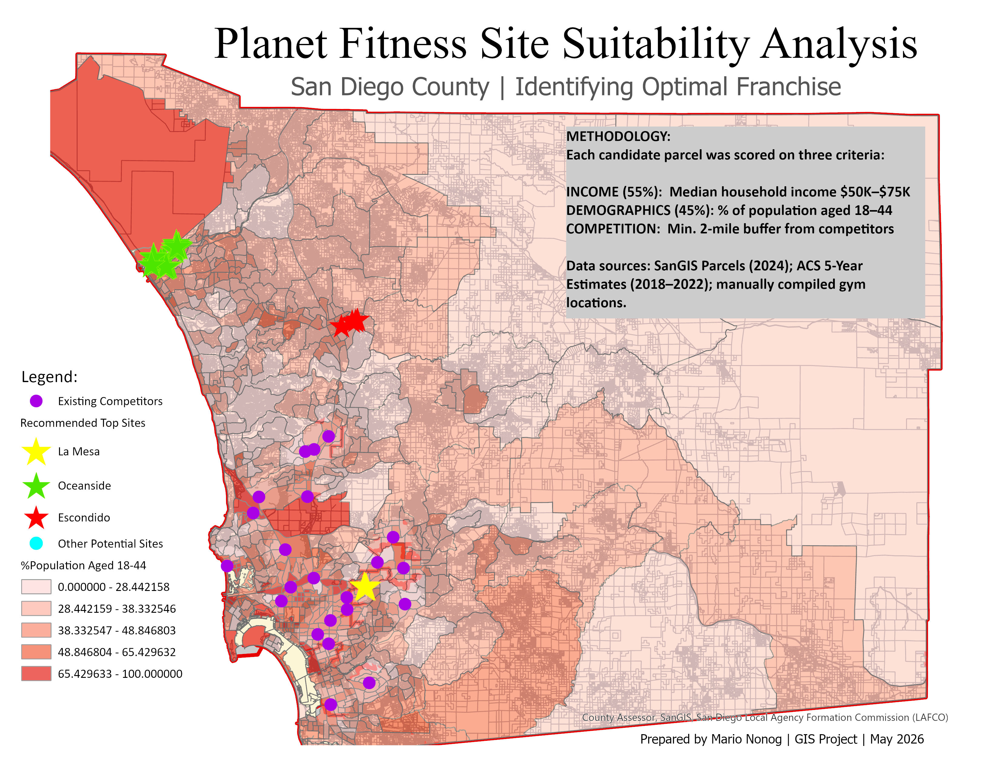
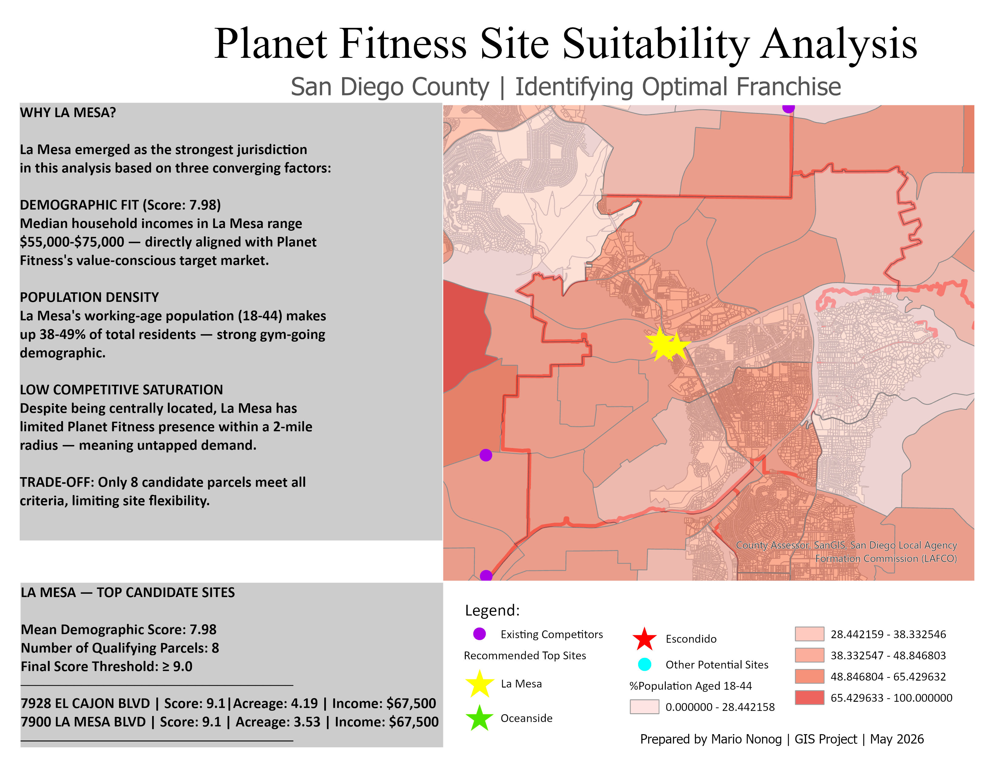
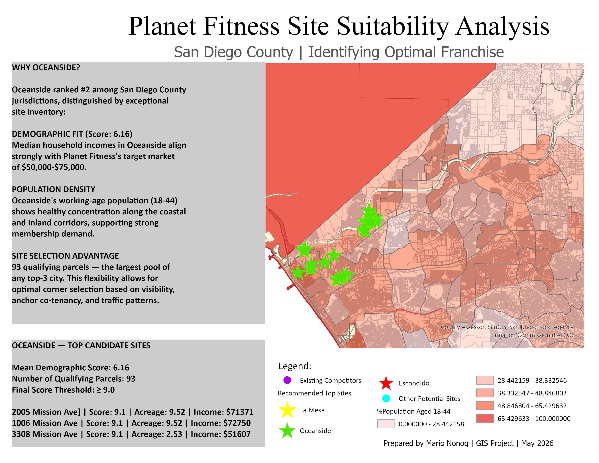
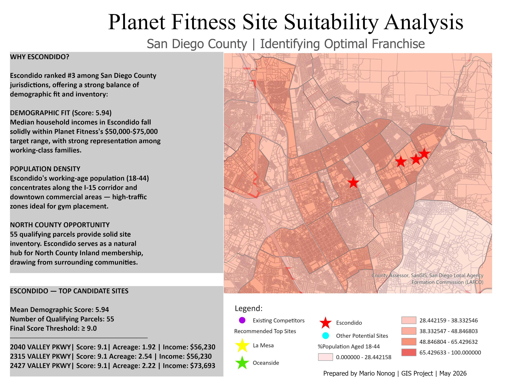

Planet Fitness Site Suitability Analysis
GIS SITE SELECTION · SAN DIEGO COUNTY
Where should Planet Fitness open its next franchise?
A demographic and competitive overlay analysis scoring every eligible parcel in San Diego County to identify the three most viable jurisdictions for a new location.
1,054,840 parcels countywide
797 candidate parcels evaluated
28 top recommended sites
55 / 45 income vs. demographic weighting
The question
Planet Fitness’s franchise model depends on a precise customer fit: value-conscious members with household incomes between $50K and $75K, a working-age population (18–44) dense enough to fill memberships, and enough distance from existing gyms to avoid cannibalizing an existing location.
This analysis converts that open-ended business question into a measurable, defensible GIS workflow built on three pillars — income fit, demographic fit, and competitive distance — and produces a tiered jurisdiction ranking backed by parcel-level evidence.
The data
Three authoritative datasets, integrated by geographic location.
SOURCE 01
SanGIS Parcels
2024
Every taxable parcel in San Diego County, with assessor-coded land use, zoning, acreage, and address. Updated weekly.
1.05M total parcels countywide
SOURCE 02
ACS Demographics
2018–2022
U.S. Census Bureau American Community Survey 5-Year Estimates at the Census tract level: median household income and population by age.
736 census tracts in San Diego County
SOURCE 03
Competitor Locations
2026
Existing Planet Fitness and 24 Hour Fitness storefronts, manually compiled from corporate websites and geocoded.
30+ competitor sites mapped
The process
Five sequential filters reduce a million parcels to a defensible shortlist.
01 GATHER Load parcels, demographics, and competitor sites
02 EXCLUDE 2-mile buffer around existing gyms removed
03 FILTER Keep commercial zoning + acreage ≥ 1.5 acres
04 ENRICH Spatial join with income + age tract data
05 SCORE Weighted index: income 55%, demographics 45%
1,054,840 → 797 → 28 — from a million parcels to a shortlist of just 28 top recommended sites
Spatial filtering
Two spatial filters eliminated saturated zones and non-buildable land before scoring began.
FILTER 01 · COMPETITOR BUFFER
Exclude parcels within 2 miles of any existing Planet Fitness or 24 Hour Fitness location. ArcGIS’s Buffer tool created 2-mile rings around each competitor; the Erase tool then removed any parcel intersecting these rings, eliminating already-saturated trade areas.
FILTER 02 · LAND USE + SIZE
Kept only buildable commercial parcels of adequate size, via a SQL filter on SanGIS attributes: NUCLEUS_US IN (200, 213, 215, 216, 230, 240, 250, 251, 252, 340) AND ACREAGE >= 1.5 AND NUCLEUS_ZO IN (50, 60) — vacant commercial, strip retail, shopping centers, and standalone retail.
1,054,840 starting universe → 778,615 after 2-mile buffer → 797 after commercial filter
Scoring each parcel
Two demographic dimensions, converted from raw data into comparable 1–10 scores, and combined into a single weighted index.
INCOME SCORE · WEIGHT 55%
Median household income fit. Planet Fitness targets value-conscious customers, not luxury gym-goers — the scoring bracket peaks at $50K–$75K, the brand’s documented core demographic.
POPULATION SCORE · WEIGHT 45%
Working-age population concentration. Calculated for each tract as the percentage of population aged 18–44, summed from 16 ACS sex-and-age fields using a custom Arcade expression.
Final Score = (Income Score × 0.55) + (Population Score × 0.45)
Income is the slightly stronger predictor of Planet Fitness performance, since the brand’s pricing model depends on a specific household-income band. Population density of the 18–44 demographic is a close second — without enough target-age residents nearby, even a perfect income match will struggle to fill memberships.
The rankings
Mean final score across all candidate parcels, by jurisdiction.
| Rank | Jurisdiction | Mean score | Candidate parcels |
|---|---|---|---|
| 1 | La Mesa | 7.98 | 8 |
| 2 | Oceanside | 6.16 | 93 |
| 3 | Escondido | 5.94 | 55 |
| 4 | Imperial Beach | 5.55 | 2 |
| 5 | San Marcos | 5.36 | 60 |
| 6 | National City | 5.29 | 17 |
| 7 | Vista | 5.16 | 45 |
| 8 | San Diego | 5.08 | 113 |
| 9 | Chula Vista | 4.98 | 52 |
| 10 | El Cajon | 4.71 | 5 |
🔒 Want the exact addresses and the full deck?
Enter your email to unlock the specific recommended site addresses below, and to download the full presentation (PDF & PPTX).
The maps


Why La Mesa? La Mesa emerged as the strongest jurisdiction based on three converging factors: median household incomes of $55,000–$75,000 directly aligned with Planet Fitness’s target market (demographic fit score 7.98); a working-age population making up 38–49% of residents; and, despite its central location, limited existing Planet Fitness presence within a 2-mile radius. The trade-off: only 8 candidate parcels meet all criteria, limiting site flexibility.
Top candidate sites: 7928 El Cajon Blvd (score 9.1, 4.19 acres, $67,500 income) · 7900 La Mesa Blvd (score 9.1, 3.53 acres, $67,500 income)

Why Oceanside? Oceanside ranked #2, distinguished by an exceptional site inventory: median household incomes aligned strongly with the $50,000–$75,000 target (demographic fit score 6.16), healthy working-age population concentration along the coastal and inland corridors, and 93 qualifying parcels — the largest pool of any top-3 city, allowing flexibility for optimal corner selection based on visibility, anchor co-tenancy, and traffic patterns.
Top candidate sites: 2005 Mission Ave (score 9.1, 9.52 acres, $71,371 income) · 1006 Mission Ave (score 9.1, 9.52 acres, $72,750 income) · 3308 Mission Ave (score 9.1, 2.53 acres, $51,607 income)

Why Escondido? Escondido ranked #3, offering a strong balance of demographic fit and inventory: incomes falling solidly within the $50,000–$75,000 target range with strong representation among working-class families (score 5.94), a working-age population concentrated along the I-15 corridor and downtown — high-traffic zones ideal for gym placement — and 55 qualifying parcels serving as a natural hub for North County Inland membership.
Top candidate sites: 2040 Valley Pkwy (score 9.1, 1.92 acres, $56,230 income) · 2315 Valley Pkwy (score 9.1, 2.54 acres, $56,230 income) · 2427 Valley Pkwy (score 9.1, 2.22 acres, $73,693 income)
Key insights & limitations
Insights
- Demographics matter more than density. Coastal areas (Del Mar, Solana Beach, Encinitas) ranked lowest despite high population — incomes far above Planet Fitness’s target band.
- The single best site is in National City. 0 Bay Marina Dr scored a perfect 10.0, but with only 17 candidate parcels citywide, National City didn’t crack the top 3 by mean score.
- Valley Parkway is a hot corridor. Four of the top 28 sites cluster along Valley Pkwy in Escondido, suggesting strong demographic alignment along that commercial strip.
- Inventory matters as much as mean score. La Mesa scored highest but offers only 8 sites; Oceanside’s 93 sites give a franchise team far more room to negotiate.
Limitations
- Two dimensions, not all dimensions. Foot traffic, parking, visibility from major roads, anchor co-tenancy, and lease availability aren’t captured — all matter to real franchise decisions.
- Tract-level demographics smooth out neighborhoods. A single Census tract may contain very different micro-neighborhoods; block-group data would be sharper for site-level decisions.
- Land-use codes lag reality. SanGIS warns its land-use field updates irregularly — a parcel listed “vacant commercial” may have a new tenant, so ground-truthing is essential.
- Buffer assumption. The 2-mile competitor radius fits urban San Diego but is conservative for North County; a variable buffer would refine results.
Recommendations
01 GROUND-TRUTH THE TOP 10 Visit highest-scoring parcels in person to check visibility, parking, anchor co-tenancy, and adjacent retail mix that GIS can’t capture.
02 ADD A THIRD DIMENSION Drive-time analysis using ArcGIS Network Analyst — a site with strong demographics but poor accessibility won’t perform.
03 REFINE WITH BLOCK-GROUP DATA Re-run the demographic overlay at the Census block-group level for sharper neighborhood-scale precision in dense areas.
04 VARIABLE COMPETITOR BUFFERS Tighter buffers (1.5 mi) in dense urban zones, wider buffers (4–5 mi) in North County to reflect real trade-area geometry.
🔒 Enter your email above to unlock downloads.
Data sources: SanGIS Parcels (2024) · ACS 5-Year Estimates (2018–2022) · manually compiled competitor locations. Prepared by Mario Nonog, GIS Project, May 2026.